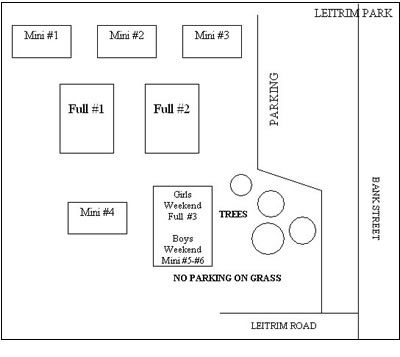

~ Information
~ Fields
Girls Tournament
~ Rules
- U9 – U12
- U13 – U18
~ Registered Teams
~ Schedules
~ Results
Boys Tournament
~ Rules
- U9 – U12
- U13 – U18
~ Registered Teams
~ Schedules
~ Results
---
~ Hotels
~ Vendor Programs
Awards
~ Girls History
~ Boys History
~ Medals
---
~ Registration and Forms
~ Contact Us
|
FIELDS
REGISTRATION:
Girls - May 26, 2016 - Boys - June 2, 2016
6 to 9 PM
École Secondaire Catholique Franco-Cité
(Large Gym Building at the back of the school and in front of the Artificial Turf Soccer Field)
623 Smyth Road
East of Roger Guindon Avenue and West of Botsford Street
(Across Smyth Road from Hillcrest High School and beside the Children's Hospital of Eastern Ontario)
Location of École Secondaire Catholique Franco-Cité
________________________________________________________
A Sort of Short Note and Explanation of Field Assignments and Locations
Due to the fact that the Icebreaker's Pools expand (in groups of four teams at a time) as demand dictates,
it is impossible to assign fields before registrations for ALL Pools close. Moreover, because of the Dual
Shoot-Out format that the tournament follows (which features more games than does the traditional
tournament format), various groupings of teams require a specific number of fields - or to put it another
way: certain venues can only accommodate Pools of a certain size. (That is also why we sometimes split large
Pools into two or more Sections that do not play against each other and most often play at different venues.)
We receive many questions regarding where a certain Pool will be playing its games. For the above reasons,
we cannot assign fields early in the process. We must wait until ALL of the Registrations for ALL of the Pools
are closed because one Pool's size and field quantity requirements has a direct impact on the location of various
other Pools. In fact, sometimes one Pool's field quantity requirements end up have a "cascading" or "domino effect"
upon the location of other Pools. The Field Assignments will be announced when we issue the Preliminary Schedules on
May 4, 2012. The Field Assignments will be published on your schedule.
In spite of the fact that it is impossible to indicate where a specific Pool will play its games, we are,
due to the fact that 90% of the fields where the Icebreaker's games are played lie within a rather small section
of the City of Ottawa, able to provide our out-of-town friends with a general area within which the majority of the
Icebreaker's venues are located, so that they will be able to book hotel and restauarants close to where they will
be playing.
That general area lies within the following geographic "rectangle": Montreal Road to the North; the International
Airport to the South; St. Laurent Boulevard to the East and the Rideau River to the West. Even if one were to
travel from one end of this rectangle to the other, it would only take between 20 and 25 minutes commuting time.
Hudson Travel Group is the Icebreaker's Travel Accommodations Sponsor and has "block-booked" many rooms at very
reasonable prices, in many hotels that lie within, or are very close to, this rectangle. Please contact Hudson through
the "Hotels" link to the left of this page to take advantage of their block-booking. Thanks.
OTTAWA BUSINESS PARK
THIS IS A LARGE PARK LOCATED ON CONROY ROAD. CONROY ROAD RUNS SOUTHWARD FROM WALKLEY ROAD AND EVENTUALLY EMERGES ON BANK STREET.
THE OTTAWA BUSINESS PARK IS ONLY ABOUT FIVE HUNDRED METRES SOUTH OF WALKLEY ROAD.
THE EAST FIELDS ARE AT THE THURSTON END OF THE PARK. THERE ARE PARKING LOTS AT THIS END OF THE PARK.
THE WEST FIELDS ARE AT THE CONROY END OF THE PARK AND THERE IS A SMALL PARKING LOT THERE.
PARKING FOR GAMES AT THE CENTRAL FIELDS - ENTER VIA THURSTON AND PARK IN THE LOTS AT THAT END OF THE PARK
OTTAWA BUSINESS PARK FIELD LAYOUT AVAILABLE .....HERE
Link to Ottawa Business Park ..... MAP Ottawa Business Park
________________________________________________________
LEITRIM PARK
TAKE BANK STREET SOUTH TO LEITRIM ROAD, TURN LEFT ON LEITRIM AND GO ABOUT 150 METRES. THEN TURN RIGHT INTO THE PARKING LOTS BEHIND AND BESIDE THE FRED BARRETT ARENA. THE FIELDS ARE BEHIND THE FRED BARRETT ARENA.
NOTICE: DO NOT PARK ON THE GRASS BECAUSE YOU WILL GET A TICKET
LEITRIM PARK FIELD LAYOUT

Link to Leitrim Park .... MAP Leitrim Park
________________________________________________________
ST. PATRICK'S High School, RIDGEMONT High School, ORLANDO PARK
BANK STREET TO HERON ROAD. GO EAST (LEFT IF GOING SOUTH - RIGHT IF HEADING NORTH). THE SCHOOLS ARE SIDE-BY-SIDE ON ALTA VISTA DRIVE AT HERON ROAD.
There is lots of parking behind both schools. You enter the St. Patrick's lot from Heron Road and you enter the Ridgemont lot from Alta Vista Drive.
ORLANDO PARK IS ACROSS HERON ROAD FROM ST. PATRICK'S HS. CONTINUE EASTWARD ON HERON ROAD. GET INTO THE LEFT-HAND LANE. PASS FINN COURT AND TURN LEFT JUST BEFORE THE MEDIAN AND JUST AFTER THE "QUEEN OF THE ANGELS" SCHOOL. YOU ARE NOW IN A PARKING LOT. CONTINUE AND TURN LEFT AT THE SCHCOOL (which is St. Patrick's INTERMEDIATE School). TURN LEFT. THE TWO FIELDS ARE WEST OF THE PARKING LOT.
Link to St. Patrick's HS ....... MAP St. Patrick's HS
________________________________________________________
ORLANDO PARK
ENTER PARK FROM HERON ROAD. PARKING IS AVAILABLE AT ST. PATRICK'S INTERMEDIATE SCHOOL.
NO PARKING ON THE GRASS
Link to Orlando Park ..... MAP to Orlando Park
_________________________________________________________
CANTERBURY High School
Link to Canterbury HS .... MAP Canterbury HS
________________________________________________________
OTTAWA TECHNICAL LEARNING CENTER
ST. LAURENT BOULEVARD NORTH TO DONALD STREET,
TURN LEFT ON DONALD STREET. THE SCHOOL IS ON THE RIGHT ABOUT 500 METRES FROM ST. LAURENT BOULEVARD.
Link to Ottawa Technical Learning Centre (OTLC) ... MAP OTLC
__________________________________________________________
McCARTHY PARK and OWL PARK
THE McCARTHY PARK FIELDS ARE BESIDE THE HUNT CLUB-RIVERSIDE COMMUNITY CENTRE AT THE CORNER OF McCARTHY ROAD AND PAUL ANKA DRIVE. McCARTHY ROAD RUNS FROM WALKLEY ROAD TO THE NORTH AND HUNT CLUB ROAD TO THE SOUTH AND IS BETWEEN BANK STREET TO THE EAST AND RIVERSIDE DRIVE TO THE WEST.
OWL PARK IS JUST NORTH-EAST OF McCARTHY PARK. FR0M THE COMMUNITY CENTRE, GO NORTH ON McCARTHY ROAD AND TURN RIGHT ONTO PLANTE DRIVE. TURN RIGHT ON OWL DRIVE. THERE ARE TWO SCHOOLS THAT BACK ONTO THE PLAYING FIELD.
Link to McCarthy/Owl Parks
__________________________________________________________
HILLCREST High School and Ecole Secondaire FRANCO CITE
THESE TWO SCHOOLS ARE ON SMYTH ROAD AND ARE ACROSS SMYTH ROAD FROM EACH OTHER. THE SCHOOLS ARE LOCATED BETWEEN THE OTTAWA AND CHEO HOSPITALS AND ARE ABOUT 750 METRES WEST OF ST-LAURENT BOULEVARD.
Link to Hillcrest HS ..... Map Hillcrest HS
_________________________________________________________
RIDEAU High School
ON ST LAURENT BOULEVARD NORTH OF McARTHUR AVENUE
Link to Rideau HS ..... MAP Rideau HS
______________________________________________________
CENTREPOINTE PARK and SIR GUY CARLETON High School
BOTH VENUES ARE LOCATED ON CENTREPOINTE DRIVE - WHICH IS ACTUALLY A VERY LONG CRESCENT. THERE ARE FOUR FIELDS AT CENTREPOINTE PARK AND TWO AT SIR GUY CARLETON HIGH SCHOOL. THE PARKING LOT FOR CENTREPOINTE PARK IS ON THE WEST'
"ARM" OF CENTREPOINTE DRIVE (I.E. ON THE WEST SIDE OF THE PARK (FURTHEST FROM WOODROFFE AVENUE)). PLEASE USE THE WESTERNMOST ENTRANCE TO CENTREPOINTE DRIVE OFF OF BASELINE ROAD TO GET TO THE CENTREPOINTE PARK FIELDS.
SIR GUY CARLETON HS IS ON THE EAST "ARM" OF CENTREPOINTE DRIVE AND THERE IS LOTS OF PARKING AT THE SCHOOL. PLEASE USE THE TALLWOOD DRIVE EXIT OFF OF WOODROFFE AVENUE TO GET TO CENTREPOINTE DRIVE AND TURN RIGHT.
Link to Centrepointe Park and Sir Guy Carleton HS
______________________________________________________
BROOKFIELD High School
TAKE BRONSON AVENUE (79) SOUTHWARD, PASS CARLETON UNIVERSITY AND CROSS THE GEORGE DUNBAR BRIDGE. KEEP RIGHT AND EXIT AT BROOKFIELD
THE SCHOOL IS AT THE BASE OF THE RAMP.
Link to Brookfield HS .... Map Brookfield HS
_______________________________________________________
GREENBORO PARK and BRUFF PARK (sometimes called "Reston Park")
TAKE CONROY ROAD SOUTH TO LORRY GREENBERG DRIVE.
TURN RIGHT ON LORRY GREENBERG AND CONTINUE ON LORRY GREENBERG FOR ABOUT 1 KM. OR GO EAST ON HUNT CLUB ROAD AND TURN LEFT AT LORRY GREENBERG DRIVE. THE GREENBORO COMMUNITY CENTRE IS ON YOUR LEFT ABOUT 300 METRES FROM HUNT CLUB ROAD.
THERE ARE TWO FIELDS BEHIND THE GREENBORO COMMUNITY CENTRE AND THE BRUFF FIELD IS ACROSS FROM THE COMMUNITY CENTRE BEHIND/BESIDE THE BASEBALL DIAMOND.
NO PARKING ON THE GRASS
Link to Greenboro/Bruff Parks ....MAP Greenboro/Bruff Parks
________________________________________________________
WINTERWOOD AND PIKE PARKS
TAKE CONROY ROAD SOUTH TO LORRY GREENBERG DRIVE.
TURN RIGHT ON LORRY GREENBERG AND CONTINUE ON LORRY GREENBERG FOR ABOUT 350 METRES. THE FIELDS ARE BEHIND ROBERTA BONDAR PUBLIC SCHOOL. OR GO EAST ON HUNT CLUB ROAD AND TURN LEFT AT LORRY GREENBERG DRIVE AND CONTINUE FOR ABOUT 750 METRES.
NO PARKING ON THE GRASS
Link to Winterwood/Pike Parks
________________________________________________________
RUSSELL BOYD PARK
GOING SOUTH ON BANK STREET, PASS HUNT CLUB ROAD AND THE CEMETERY ON YOUR RIGHT. GET INTO LEFT-HAND LANE AND TURN LEFT AT ST. BERNARD AND CONTINUE ALONG ST. BERNARD TO SIXTH STREET WHERE THE PARK IS LOCATED.
Link to Russell Boyd Park
________________________________________________________
FEATHERSTON PUBLIC SCHOOL and McMASTER CATHOLIC SCHOOL
OFF OF KILBORN AVENUE. TURN ONTO VIRGINIA DRIVE. YOU WILL SEE ASTER STREET (ON WHICH McMASTER CATHOLIC SCHOOL IS LOCATED) BUT THERE IS VERY LIMITED PARKING AT THAT SCHOOL. THE MAJORITY OF THE PARKING IS AT FEATHERSTON PUBLIC SCHOOL AND SO, CONTINUE ALONG VIRGINIA DRIVE TO FEATHERSTON DRIVE. TURN RIGHT AT FEATHERSTON DRIVE. GO PAST THE SCHOOL (WHICH IS ON YOUR RIGHT) AND ENTER THE PARKING LOT WHICH IS TO THE WEST OF THE SCHOOL. THE TWO SCHOOLS' YARDS BACK ONTO AN ADJOINING COMMON AREA WHERE ALL OF THE MINI SOCCER FIELDS ARE LOCATED.
NO PARKING ON THE GRASS
Link Featherston Public School and McMaster Catholic School Mini Soccer Fields
________________________________________________________
BREWER PARK
ON BRONSON AVENUE ACROSS FROM CARLETON UNIVERSITY. THERE IS LOTS OF PARKING THERE BUT YOU CAN ACCESS THESE LOTS ONLY FROM BRONSON AVENUE.
NO PARKING ON THE GRASS
Link Brewer Park ..... MAP Brewer Park
_________________________________________________________
RAOUL WALLENBERG PARK AND ECOLE SECONDAIRE OMERS DESLAURIERS FIELDS
ON THE NORTH SIDE OF VIEWMOUNT DRIVE BETWEEN FISHER AVENUE AND MERIVALE ROAD. THERE IS LOTS OF PARKING AT OMER DESLAURIERS SCHOOL AND A SMALL PARKING LOT BESIDE THE RAOUL WALLENBERG FIELDS AND A SECOND SMALL PARKING LOT AT ECOLE LAURIER-CARRIERE WHICH IS IMMEDIATELY BESIDE THE SMALL PARKING LOT AT RAOUL WALLENBERG PARK.
NO PARKING ON THE GRASS
Link Raoul Wallenberg Park/Ecole Secondaire Omers Deslauriers ..... MAP Wallenberg/Deslauriers
|
|
HOST CLUB:

Tournament sanctioned
by:


|